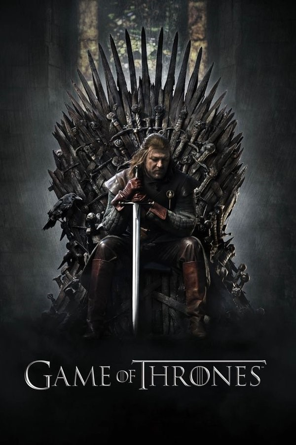

<section class="article-ocs py-5">
  <div class="container">
    <div class="row">
      <article class="">
        <h2>Game of Thrones</h2>
        <h5>La guerre pour le trone de fer fait rage au sein des 7 courrones et les marcheurs blancs rodent, 17 janvier 2021</h5>

        <p>
          <strong class="emphase">Titre original: </strong> Game of Thrones
          <strong class="emphase"> Création: </strong> D. B. Weiss, George R. R. Martin
          <strong class="emphase">Réalisation: </strong> Timothy Van Patten, Daniel Minahan, Brian Kirk, Alan Taylor
        </p>

        <div class="article_img">
          
        </div>

        <p>
          Sur le continent de Westeros, le roi Robert Baratheon règne sur le Royaume des Sept Couronnes depuis qu’il a mené à la victoire la rébellion contre le roi fou Aerys II Targaryen, dix-sept ans plus tôt. Son guide et principal conseiller, Jon Arryn, venant de décéder, il part dans le nord du royaume demander à son vieil ami Eddard Stark, seigneur suzerain du Nord et de la Maison Stark, de remplacer leur regretté mentor au poste de « main du Roi ». Eddard, peu désireux de quitter ses terres, accepte à contrecœur de partir à la Cour avec ses deux filles.Jon Snow, son fils bâtard, se prépare à intégrer la fameuse Garde de Nuit : la confrérie protégeant le royaume depuis des siècles à son septentrion, de toute créature pouvant provenir d’au-delà du Mur protecteur. Mais, juste avant le départ pour le Sud, Bran, un des jeunes fils d’Eddard, fait une découverte en escaladant une tour de Winterfell dont découleront des conséquences inattendues…
        </p>

        <p>
          Dans le même temps, sur le continent Est, Viserys Targaryen, héritier « légitime » en exil des Sept Couronnes et fils d’Aerys, projette de marier sa jeune sœur Daenerys à Drogo, le chef d’une puissante horde de cavaliers nomades afin de s’en faire des alliés, en vue de la reconquête du royaume. Mais Viserys est presque aussi instable mentalement que son père. Les aventures des Stark, des Lannister, des Targaryen et des Tyrell vous passioneront. Neuf familles nobles rivalisent pour le contrôle du Trône de Fer dans les sept royaumes de Westeros. Pendant ce temps, des anciennes créatures mythiques oubliées reviennent pour faire des ravages. Elles vont se déchirer, s’entretuer, se trahir tout au long des 8 saisons de la série. La fin est inattendue parce que inimaginable par les vrais fans de GOT !
        </p>

        <p>
          Game of Thrones, c’est LA série qui divise ou pas vos amis, occupe vos soirées quelques mois par an, et vous fait passer par toutes les émotions. Au royaume de Westeros, la guerre, les jeux de pouvoir et le sexe règnent en maîtres.
        </p>

        <p>
          La saga littéraire, Le Trône de Fer, de George Martin a tellement soulevé les foules à son arrivée sur HBO que dès la saison 6, les livres sont à la traîne et la saison 8 a tant divisé les fans que les avis divergent sur l’histoire originale et les scénarios choisis pour la série !
        </p>

        <p>
          L’auteur distille de saison en saison des indices troublants voir choquants quant à la suite de l’histoire auprès des créateurs de la série pour teaser les fans. Et ce n’est pas pour nous déplaire et nous rendre dingue à attendre tout nouvel épisode même à 3h du matin en décalage US. Si vous aimez les histoires avec ce type d'éléments alors foncez.
        </p>

        <p>
          Au cas où vous ne seriez pas prévenus, il y a des morts dans Game of Thrones. BEAUCOUP de morts et ce dès la saison 1. On s’attache à un personnage et il disparait souvent dans d’atroces souffrances et les fans sont tristes à chaque saison. RIP !
        </p>

        <p>
          Leur visage ne vous disait peut-être rien il y a quelques années. Kit Harrington, Emilia Clarke, Maisie Wiliams, Peter Dinklage, Lene Headey, Natalie Dormer ou encore Nikolaj Coster-Waldau font aujourd’hui partie des acteurs les plus connus de série en streaming. Ils déplacent des foules et tous les fans veulent un souvenir d’eux aux 4 coins du monde.
        </p>

        <p>
          C’est très compliqué de parler de cette série sans spoiler mais retenez ceci pour fil conducteur général : Winter is coming et c’est peu de le dire.
          Bon visionnage !
        </p>

        <iframe width="560" height="315" src="https://www.youtube.com/embed/Ng1W_qu5aJM" frameborder="0" allow="accelerometer; autoplay; clipboard-write; encrypted-media; gyroscope; picture-in-picture" allowfullscreen></iframe>

        <p class="signature text-end"><strong>Charly</strong></p>
      </article>

    </div>

  </div>

</section>


